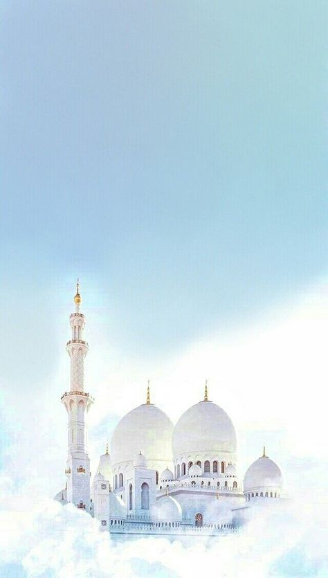
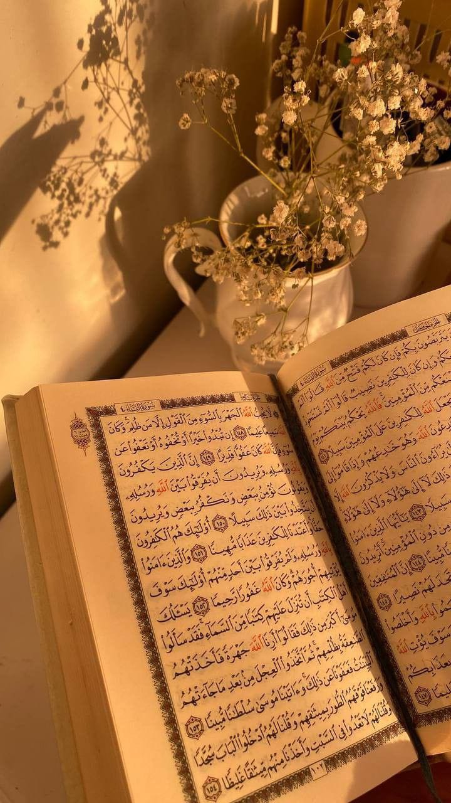

Berita Seputar Kegiatan Masjid As-Suruur
Renovasi Masjid As-Suruur

Kami dengan senang hati mengumumkan bahwa proses renovasi Masjid As-Suruur telah selesai. Semoga masjid ini menjadi tempat ibadah yang nyaman dan indah bagi seluruh jamaah.
Acara Tausiyah Rutin

Setiap Jumat malam, kita mengadakan acara tausiyah bersama untuk mempererat ukhuwah dan meningkatkan pemahaman keagamaan. Semua jamaah diundang untuk hadir.
Program Donasi Untuk Anak Yatim

Masjid As-Suruur mengadakan program donasi untuk mendukung anak-anak Yatim kurang mampu di sekitar masjid. Ayo bergabung dan berkontribusi untuk masa depan mereka.